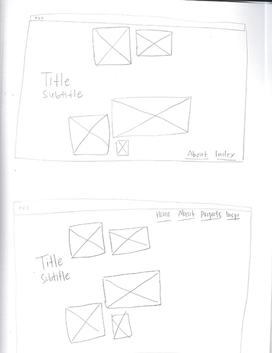
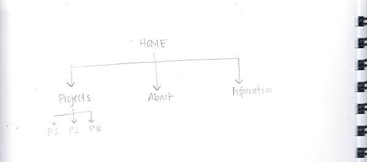

This is my entry page


For the entry page wireframe, I decided to add space for images of previous projects because this website will document my design process and work. I wanted visitors to immediately get an iea of the types of projects I create and my design style. I also chosen images because I thought they would load more easily than vieos.
One idea I applied from the Information Architecture vs Navigation reading was that the organization of a website's content should be considered before designing its navigation. I organized my current pages into Home, About, Projects, and Inspiration. I decided I'd place my Interactive Sketchbook under Projects so that I can continue adding work to that section without overcrowding the main navigation as the website grows.
While linking the pages together, I had trouble remebering how to move back out of folders using relative paths. Once I figured that out, I adjusted the navigation on one page and copied the structure to others, which made the process much easier. My original wireframe placed tha navigation at the bottom and only included About and Index. After planning the site further, I moved the navigation to the top so visitors would not have to scroll to find it. I also added Home and Inspiration and renamed Index to Projects because it more clearly describes what visitors will find there.
The Projects page is still temporarly empty because I have not added my Interactive Sketchbook yet. As I add more work, I hope this structure will make the website easeir to expand without having to reorganize the entire navigation.